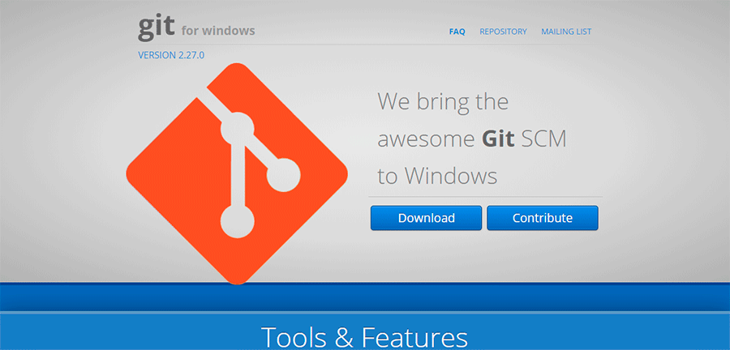
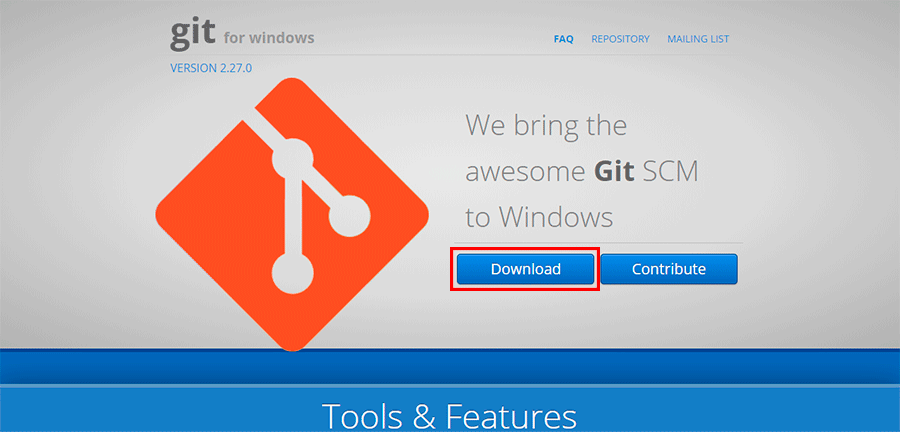
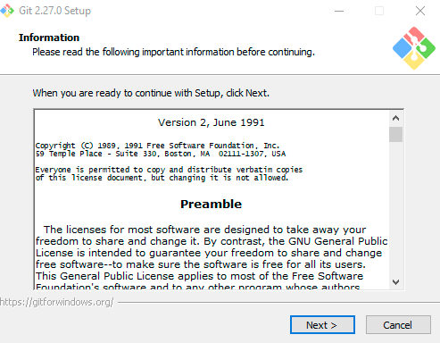
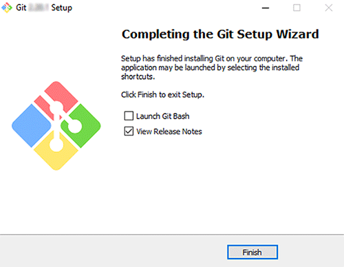

Instalação no Windows
Nesta página, você aprenderá a fazer a instalação do Git no Windows por etapas, de forma prática e rápida. Execute os seguintes passos:
- Acesse o site Git for Windows. 
- Clique em Download e automaticamente começará a baixar o arquivo. 
- Abra o arquivo que foi baixado.
- Siga as orientações de instalação, clicando em Next e Install. 
- Depois de esperar o processo de instalação, clique em Finish. 
Pronto! O Git foi instalado no Windows com sucesso!
Diferente da instalação do Git no Linux, no Windows é por meio de um arquivo executável de instalação. Agora desfrute seus projetos com o Git!
E vale ressaltar que, anteriormente o Git for Windows era necessário escolher a versão do Windows (32 bits/64 bits) e no momento da publicação deste site esta a opção não é necessária, instalando a versão de acordo com o tipo de arquitetura do computador.